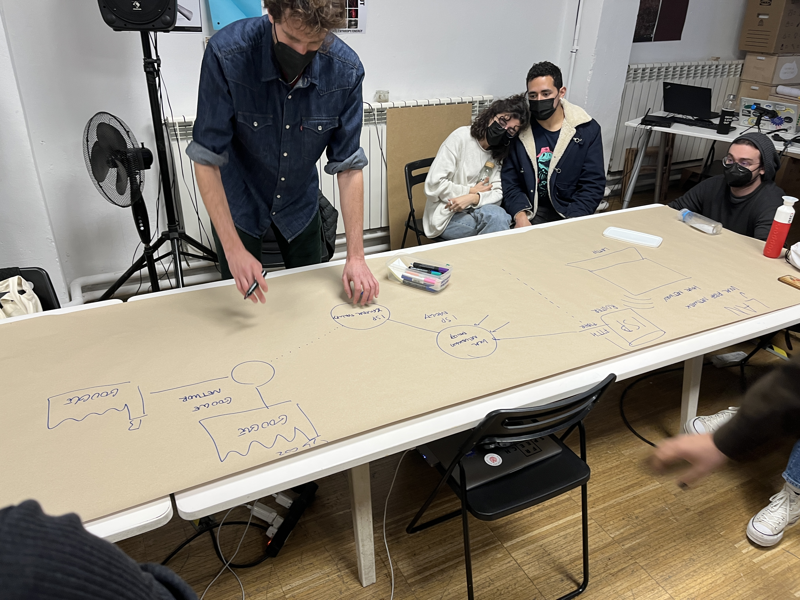
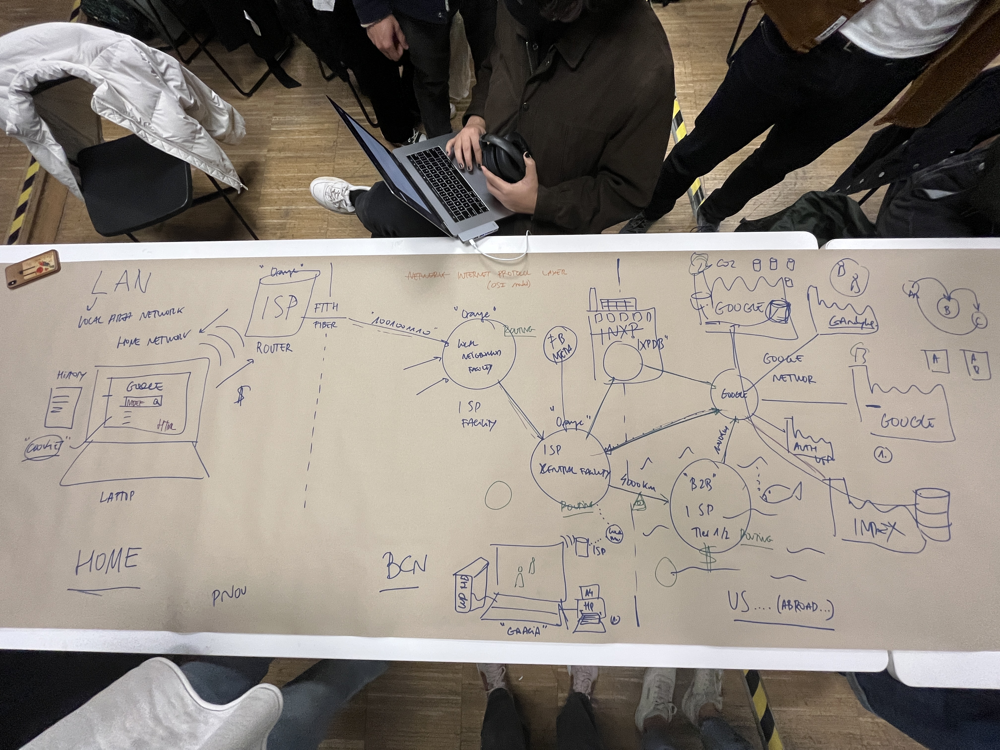
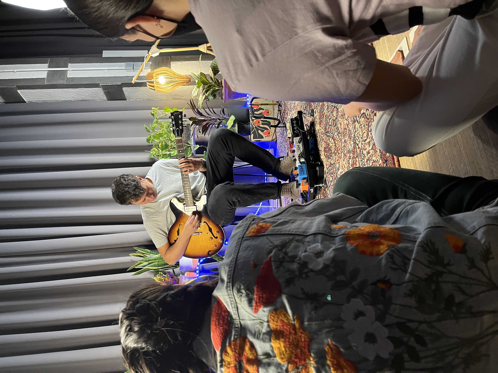

Weekly reflections
Documenting my Master's program, week by week
WEEK 6
For the second part of the class, we spoke to the mentors and classmates about our previous and future design interventions. It was nice to bounce around ideas, and I appreciated my talk with Oscar where I expressed my concerns about not aligning all of my work and having everything being all over the place. He told me that the connections don’t always happen immediately, and sometimes never at all, but it’s important to keep experimenting, exploring and most of all, doing.
When I mentioned my interest in IDEAL, he told me to contact Saùl, who has done some work with them in the past and near future. I wrote to him on Instagram, and he told me he’d be happy to forward the museum my contact so that I could volunteer for projects in the upcoming months. It got me thinking that I should really work on building a proper portfolio website to use as a sort of business card.
On Wednesday we had our usual fab academy class. This week we talked about 3D printing and additive manufacturing in general. The whole class was especially happy to see the more unconventional ways of 3D printing… with mashed potatoes. There was something very funny about 20 grown adults sitting in awe in front of a machine that usually spits out plastic but instead created shapes out of potatoes.
Thursday we started out with an Emergent Technologies lecture by Guillem and Oscar. The topic was “the cloud that wasn't” and I found it quite interesting. A lot of the things that were spoken about in class were familiar to me but that didn’t mean that I was enjoying their perspectives and explanations.


The day took a bit of a depressing turn with Atlas of weak signals, where the topic of climate change was discussed. Although the subject needs to be talked about, it felt incredibly heavy and hopeless. It had nothing to do with the course structure or professor’s skills, but rather the facts themeselves. With the way the world currently is, it feels like we keep getting bad news after bad news.
Once the seminar was over, I left the building with Pippa and we started crying. I remember her tearing up as she said “I won’t ever be able to have kids”.
Friday turned out to be less of a sad day. I started the day by (finally) completing my laser cut wine box after so many failed attempts. After that, Joaquin invited us to participate in his design intervention involving music and modelling clay. It was a great experience getting to hear him perform as we tranposed what we heard onto the clay with our hands.


I was happy to end the week this way, before going to see my dad for his birthday this weekend.